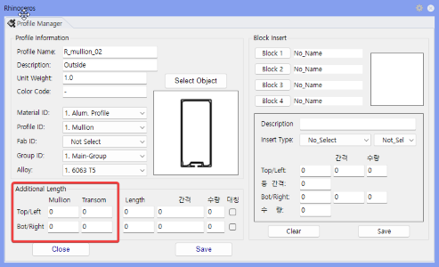
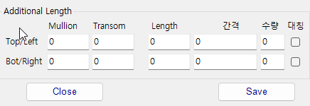
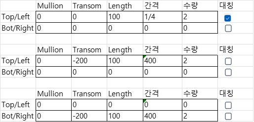

Additional Length Length / 간격 / 수량
Mullion, Transom 등 Solid Model의 길이를 Section Data 값으로 변경하거나, 여러 개로 분할된 Profile Solid를 만드는 기능입니다.
Solid Model을 직접 편집하지 않고 Section Data의 길이 관련 값을 변경하여 Profile의 위/아래 또는 좌/우 길이를 조정합니다. 필요할 경우 일정 길이와 간격, 수량을 입력하여 분할된 Profile Solid를 생성할 수 있습니다.
Additional Length 값을 입력합니다.+ 값은 길이 증가, - 값은 길이 감소로 적용됩니다.

Length, 간격, 수량 입력칸을 이용하면 하나의 Line 기준에서 여러 개로 분할된 Profile Solid를 만들 수 있습니다.
| 입력 예 | 설명 |
|---|---|
| 1/4 위치, 길이 100 | Transom Line의 시작점과 끝점에서 각각 1/4 위치에 길이 100의 Profile을 만듭니다. 1/4, 1/6 등 분수를 사용할 수 있습니다. |
| 시작점 기준 200, 길이 100, 간격 400, 수량 2 | Transom Line 시작점에서 200 들어온 위치부터 길이 100 Profile을 400 간격으로 2개 생성합니다. |
| 끝점 기준 200, 길이 100, 간격 400, 수량 2 | Transom Line 끝점에서 200 들어온 위치부터 길이 100 Profile을 400 간격으로 2개 생성합니다. |
